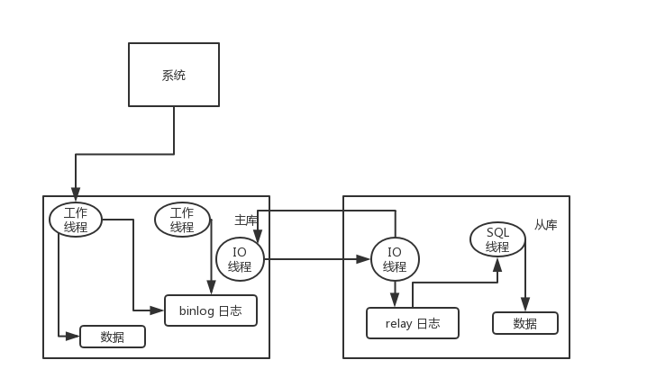

mysql 集群
主从模式,一般为：1主2从 (适合读写分离场景，Keepalive 故障切换-满足高可用)
如何实现 MySQL 的读写分离？
其实很简单，就是基于主从复制架构，简单来说，就搞一个主库，挂多个从库，然后我们就单单只是写主库，然后主库会自动把数据给同步到从库上去。
MySQL 主从复制原理的是啥？
主库将变更写入 binlog 日志，然后从库连接到主库之后，从库有一个 IO 线程，将主库的 binlog 日志拷贝到自己本地，写入一个 relay 中继日志中。接着从库中有一个 SQL 线程会从中继日志读取 binlog，然后执行 binlog 日志中的内容，也就是在自己本地再次执行一遍 SQL，这样就可以保证自己跟主库的数据是一样的。

这里有一个非常重要的一点，就是从库同步主库数据的过程是串行化的，也就是说主库上并行的操作，在从库上会串行执行。所以这就是一个非常重要的点了，由于从库从主库拷贝日志以及串行执行 SQL 的特点，在高并发场景下，从库的数据一定会比主库慢一些，是有延时的。所以经常出现，刚写入主库的数据可能是读不到的，要过几十毫秒，甚至几百毫秒才能读取到。
而且这里还有另外一个问题，就是如果主库突然宕机，然后恰好数据还没同步到从库，那么有些数据可能在从库上是没有的，有些数据可能就丢失了。
所以 MySQL 实际上在这一块有两个机制，一个是半同步复制，用来解决主库数据丢失问题；一个是并行复制，用来解决主从同步延时问题。
这个所谓半同步复制，也叫 semi-sync 复制，指的就是主库写入 binlog 日志之后，就会将强制此时立即将数据同步到从库，从库将日志写入自己本地的 relay log 之后，接着会返回一个 ack 给主库，主库接收到至少一个从库的 ack 之后才会认为写操作完成了。
所谓并行复制，指的是从库开启多个线程，并行读取 relay log 中不同库的日志，然后并行重放不同库的日志，这是库级别的并行。
MySQL 主从同步延时问题
以前线上确实处理过因为主从同步延时问题而导致的线上的 bug，属于小型的生产事故。
是这个么场景。有个同学是这样写代码逻辑的。先插入一条数据，再把它查出来，然后更新这条数据。在生产环境高峰期，写并发达到了 2000/s，这个时候，主从复制延时大概是在小几十毫秒。线上会发现，每天总有那么一些数据，我们期望更新一些重要的数据状态，但在高峰期时候却没更新。用户跟客服反馈，而客服就会反馈给我们。
我们通过 MySQL 命令：
show statusCopy to clipboardErrorCopied
查看 Seconds_Behind_Master，可以看到从库复制主库的数据落后了几 ms。
一般来说，如果主从延迟较为严重，有以下解决方案：
- 分库，将一个主库拆分为多个主库，每个主库的写并发就减少了几倍，此时主从延迟可以忽略不计。
- 打开 MySQL 支持的并行复制，多个库并行复制。如果说某个库的写入并发就是特别高，单库写并发达到了 2000/s，并行复制还是没意义。
- 重写代码，写代码的同学，要慎重，插入数据时立马查询可能查不到。
- 如果确实是存在必须先插入，立马要求就查询到，然后立马就要反过来执行一些操作，对这个查询设置直连主库。不推荐这种方法，你要是这么搞，读写分离的意义就丧失了。
主从复制
MySQL 主从复制涉及到三个线程，一个运行在主节点（log dump thread），其余两个(I/O thread, SQL thread)运行在从节点。
- Log Dump Thread：当从节点连接主节点时，主节点会创建一个 log dump 线程，用于发送 bin-log 的内容。在读取 bin-log 中的操作时，此线程会对主节点上的 bin-log 加锁，当读取完成，甚至在发动给从节点之前，锁会被释放。
- I/O Thread：当从节点上执行
start slave命令之后，从节点会创建一个 I/O 线程用来连接主节点，请求主库中更新的 bin-log。I/O线程接收到主节点 binlog dump 进程发来的更新之后，保存在本地 relay-log 中。 - SQL Thread：负责读取 relay log 中的内容，解析成具体的操作并执行，最终保证主从数据的一致性。
一个 slave 节点可同时从多个 master 进行数据复制，在这种情况下，不同 master 的 bin-log 存储在不同的 relay log中。
同步模式
异步模式（mysql async-mode）：MySQL增删改操作会全部记录在 binary log 中，当 slave 节点连接 master 时，会主动从 master 处获取最新的 bin log 文件。
半同步模式(mysql semi-sync)：这种模式下主节点只需要接收到其中一台从节点的返回信息，就会 commit ；否则需要等待直到超时时间然后切换成异步模式再提交；这样做的目的可以使主从数据库的数据延迟缩小，可以提高数据安全性，确保了事务提交后，binlog 至少传输到了一个从节点上，不能保证从节点将此事务更新到 db 中。性能上会有一定的降低，响应时间会变长。
全同步模式 是指主节点和从节点全部执行了commit并确认才会向客户端返回成功。
主从复制的延迟问题
进行主从同步的过程中，如果使用异步或半异步模式，均会有主从节点数据不一致的窗口时间。同时，从节点上的 SQL Thread 只能串行执行 relay-log 中的记录，当某条 DDL/DML 耗时较长时，会加剧这个窗口时间；再者在某些场景下会使用 slave 节点进行数据读取，这也可能导致数据加锁等待。基于以上原因在处理主从复制延迟问题上有以下几种方向：
- 优化主从节点之间的网络延迟
- 降低 master 负载，以减少 TPS
- 降低 slave 负载，slave 只做备份使用，不提供服务
- 调整 slave 参数：关闭 slave bin-log 等
- 多线程的主从复制：不同 schema 下的表并发提交时的数据不会相互影响，即 slave 节点可以用对 relay log 中不同的 schema 各分配一个SQL Thread，来重放 relay log 中主库已经提交的事务